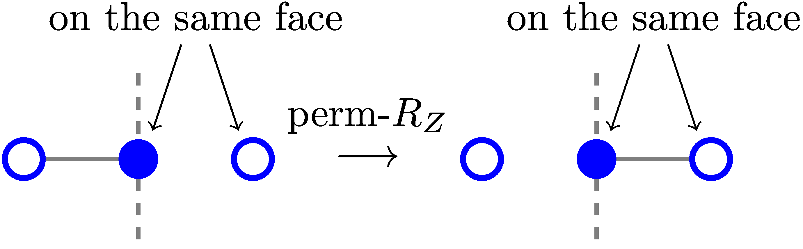

Quon
Rules
String Genus
Yang Baxter (Star/Triangle)
Z Fusion
X Fusion

Perm Rz

We only consider the pattern on the LHS for now.
Identity
The phase of an edge is approximately zero.
Genus Fusion
Swap Genus

This rule is from the 3D diagram, we force removing one of the genus of a swap operator since they are the same operator in the 3D diagram. Might should revisit the 3D diagram skeleton graph idea later.
Quon.RuleQuon.is_open_half_edgeQuon.is_open_vertexQuon.is_orth_half_piQuon.is_para_half_piQuon.n_conn_compQuon.normalizeQuon.split_edge!Quon.yang_baxter_param
Quon.Rule — TypeRule{R}A struct for rules. R can be :string_genus, yang_baxter_star, yang_baxter_triangle, charge_rm_v, charge_rm_f, z_fusion, x_fusion, perm_rz, identity, genus_fusion, swap_genus.
Quon.is_open_half_edge — Methodis_open_half_edge(q::Tait, he)Returns true if he is an open half edge.
Quon.is_open_vertex — Methodis_open_vertex(q::Tait, v)Returns true if v represent a special vertex for open edges.
Quon.is_orth_half_pi — Methodis_orth_half_pi(p)Returns true if p ≈ π/2 (⊥) or -π/2 (∥).
Quon.is_para_half_pi — Methodis_para_half_pi(p)Returns true if p ≈ π/2 (∥) or -π/2 (⊥).
Quon.n_conn_comp — Methodn_conn_comp(g::PlanarMultigraph)Return the number of connected components.
Quon.normalize — Methodnormalize(g)Return a relabeled planar graph.
Quon.split_edge! — Methodsplit_edge!(g::PlanarMultigraph, he_id)Split the edge corresponding to he into 2 edges. This is used for creating planar simple graphs from planar multigraphs.
Quon.yang_baxter_param — Methodyang_baxter_param(α1, β1, γ1)Return α2, β2, γ2 according to the Yang-Baxter equation:
\ / | | \ /
\ / | | \ /
α1 | | α2
| \ / \ / |
| \ / \ / |
| β1 = β2 |
| / \ / \ |
| / \ / \ |
γ1 | | γ1
/ \ | | / \
/ \ | | / \